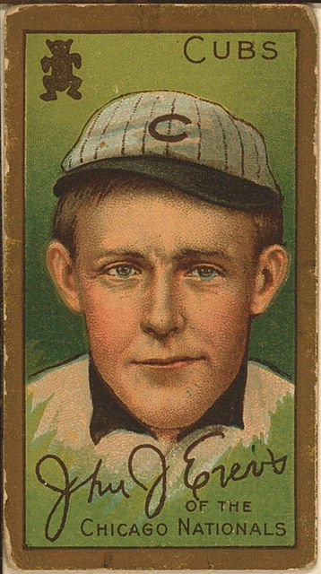
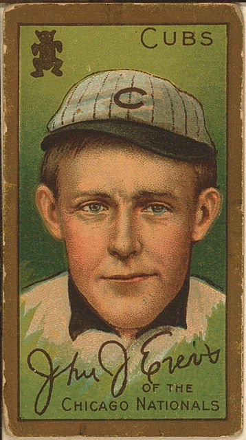
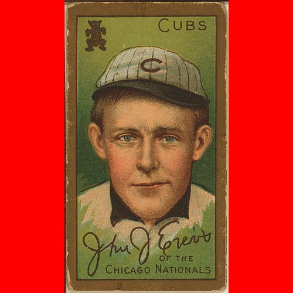
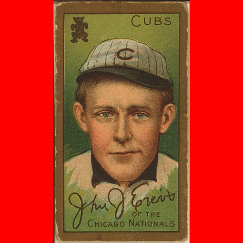
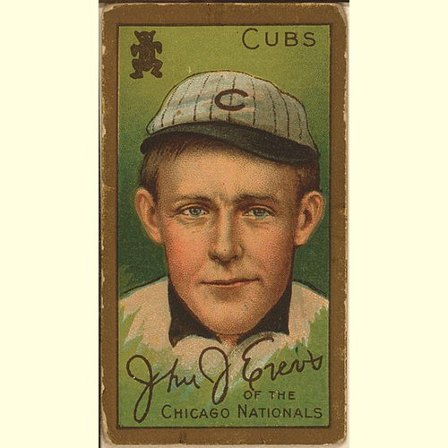
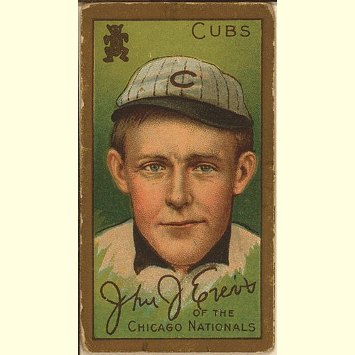
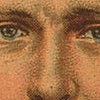
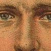
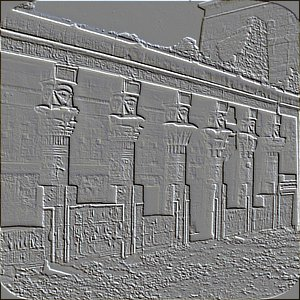

Django Template Tag¶
In the template, first:
{% load transmogrifiers %}
You will have access to the following tags:
transmogrify¶
Alter an image URL so that the media server will transform the image on the fly. This tag allows for multiple actions on an image. There are shortcuts for doing just one action.
Usage:¶
{% transmogrify url [action [param]] [action2 [param2] ...] %}
Available actions:¶
- thumbnail <width>
- Thumbnail to a given width. Height is set to maintain aspect ratio.
- thumbnail x<height>
- Thumbnail to a given height. Width is set to maintain aspect ratio.
- thumbnail <width>x<height>
- Thumbnail to fit a given size. The image is reduced to fit proportionally within the specified size.
- crop <width>x<height>
- Crop to a given size. Crops are centered within the image.
- resize <width>x<height>
- Resize the image proportionally to fit within the specified size.
- forcefit <width>x<height>
- Force the image to fit within the specified box; could result in a distorted image.
- letterbox <width>x<height> <color>
- Resize the image proportionally to fit within the specified size, and fill the remaining space with the specified color. Color should be in #RRGGBB or #RGB format.
- filter <filter>
Run an image filter; filter can be:
- blur
- contour
- detail
- edge_enhance
- edge_enhance_more
- emboss
- find_edges
- smooth
- smooth_more
- sharpen
These don’t look all that good, but whatever.
- border <width> <color>
- Add a <width> pixel border around the image. <color> should be in HTML (#RRGGBB or #RGB) format.
Examples:¶
Thumbnail 200px wide:
{% transmogrify img thumbnail "200" %}
Thumbnail 200px high:
{% transmogrify img thumbnail "x200" %}
Thumbnail to fit within 200x200:
{% transmogrify img thumbnail "200x200" %}
Resize to fit within a 400x400px box:
{% transmogrify img resize "400x400" %}
Resize to be 400px wide:
{% transmogrify img resize "400" %}
Resize to be 400px high:
{% transmogrify img resize "x400" %}
Force the image to fit 75x75, distorting the image if the aspect isn’t right:
{% transmogrify img forcefit "75x75" %}
Resize the image to fit 100x100 and sharpen:
{% transmogrify img resize "100x100" filter "sharpen" %}
Resize the image to fit 100x100, smooth, and add a 1px black border:
{% transmogrify img resize "100x100" filter "smooth" border "1" "#000" %}
Crop a 100x100 section out of the middle of image:
{% transmogrify img crop "100x100" %}
thumbnail¶
A shortcut to the transmogrify tag’s thumbnail action. It creates a thumbnail.
Usage:¶
{% thumbnail <image_url> <width> %}
{% thumbnail <image_url> x<height> %}
{% thumbnail <image_url> <width>x<height> %}
Examples:¶
Thumbnail 200px wide
{% thumbnail img 200 %}


Thumbnail 200px high
{% thumbnail img x200 %}

Thumbnail to fit within 200x200
{% thumbnail img 200x200 %}


resize¶
A shortcut to the transmogrify tag’s resize action. It resizes the image to fit the dimensions and maintains the aspect ratio.
Usage:¶
{% resize <image_url> <width> %}
{% resize <image_url> x<height> %}
{% resize <image_url> <width>x<height> %}
Examples:¶
Resize image to 500px wide
{% resize img 500 %}

 

Note
The vertical image is not 500 pixels wide because the original is only 358 pixels wide. The Python Imaging Library will not upscale an image. Instead the original image is returned.
Resize image to 500px high
{% resize img x500 %}


Resize image to fit within 500x500 pixel box
{% resize img 500x500 %}


letterbox¶
A shortcut to the transmogrify tag’s letterbox action. It resizes the image to fit the dimensions and maintains the aspect ratio. The remaining space is filled with the color specified.
Usage:¶
{% letterbox <image_url> <width>x<height> <color> %}
Example:¶
Resize image to fit within 500x500 pixel box, and fill the rest with red
{% letterbox img 500x500 #f00 %}

 

Resize image to fit within 400x500 pixel box, and fill the rest with a light yellow
{% letterbox img 500x500 #fffee1 %}

 

forcefit¶
A shortcut to transmogrify tag’s forcefit action. It resizes the image to fit the dimensions, possibly distorting the image in the process.
Usage:¶
{% forcefit <image_url> <width>x<height> %}

crop¶
A shortcut to the transmogrify tag’s crop action. It crops out a section of the center of an image.
Usage:¶
{% crop <image_url> <width>x<height> %}

 

filter¶
A shortcut to the transmogrify tag’s filter action. It applies the specified filter (one of blur, contour, detail, edge_enhance, edge_enhance_more, emboss, find_edges, smooth, smooth_more, sharpen) to the image. Only one filter can be specified.
Usage:¶
{% filter <image_url> <filtername> %}
Examples:¶
Blur
Contour

Detail

Edge Enhance
Edge Enhance More
Emboss
Find Edges
Sharpen
Smooth

Smooth More